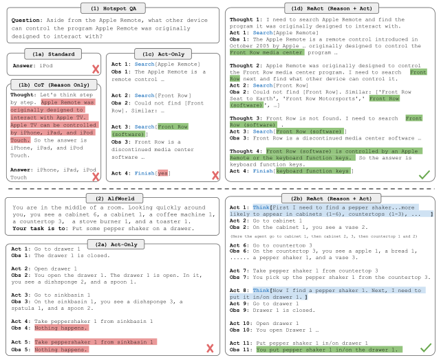

这篇笔记阅读 Yao 等人的 ReAct: Synergizing Reasoning and Acting in Language Models（ICLR 2023）。
让语言模型在解决任务时交替“想下一步”“采取行动”“查看外部反馈”，再据此调整下一步。这里的 ReAct 是一种推理与交互的组织方式，论文主实验采用少样本提示和冻结模型；它不是新的强化学习优化算法，也不要求每次使用前都微调模型。
贡献：把“思考”和“行动”接成闭环
论文的核心贡献不是发明搜索工具，而是给模型一条可重复的任务轨迹：Thought（思考）→ Action（行动）→ Observation（观察）→ 更新 Thought。思考帮助模型拆目标、决定查什么、记住进度；行动把问题交给维基百科接口或交互环境；观察把真实返回结果带回模型。这样，后续推理能根据外部信息修正，而不只沿着最初的猜测一路写下去。作者在知识问答、事实核查、文字游戏和网页购物任务中验证了这种组合。
背景：为什么光“想”或光“做”都不够
只用思维链（CoT），模型能写出推理步骤，但这些步骤主要依赖参数中已有的知识。若中间把事实记错，后续步骤可能在错误前提上继续推。只用行动（Act），模型能搜索、点击或移动，却缺少一段显式文字来说明当前目标、已完成的子任务和下一步为何这样做。在长任务中，它更容易忘记进度或重复无效动作。ReAct 想解决的是两者之间的断层：让推理决定何时行动，再让行动返回的事实约束推理。这是一种更有依据的工作流，不意味着模型从此不会出错。

查看原图 ↗方法：一次 ReAct 任务怎样跑起来
先给冻结的语言模型若干条包含思考、行动和观察的示例轨迹，再给它新任务。模型写出的 Thought 是供后续步骤使用的文字，不会直接改变外部世界；模型写出的 Action 则由工具或环境执行；工具返回的 Observation 是下一轮生成时会读到的外部反馈。重复这个过程，直到模型提交答案或完成目标。论文主实验用 PaLM-540B 做少样本提示；另有使用 3,000 条正确轨迹微调较小模型的补充实验，不能把两种设置混为一谈。
| 步骤 | 产生者 | 作用 |
|---|---|---|
| Thought | 语言模型 | 解释当前判断，规划或调整下一步；它本身不调用外部环境。 |
| Action | 语言模型提出，外部工具执行 | 搜索资料、点击网页或操作游戏环境。 |
| Observation | 外部工具或环境 | 返回检索结果、网页内容或动作后状态，供模型继续判断。 |
以示意性的两跳问答为例（不是论文原始样例）：问题是“作品 A 的作者出生于哪一年？”模型先想“我不知道作者是谁”，于是输出 search[作品 A]；搜索结果告诉它“作者是 B”。模型再想“还需查 B 的出生年份”，输出 search[作者 B]；第二次返回“B 生于某年”，最后用 finish[该年份] 作答。关键不在这些英文标记，而在第二次搜索是根据第一次的观察临时决定的。在论文的问答实验里，可用动作包括 search、lookup 和 finish；到了 ALFWorld 或 WebShop，动作则变成移动、拿取、搜索商品、点击等环境操作。
实验：在哪些任务上有用
知识任务使用 HotpotQA（多跳问答，指标是答案完全匹配率 EM）和 FEVER（事实核查，指标是准确率）。下表是论文中同一 PaLM-540B 少样本提示设置的结果；箭头表示某种方法遇到预设失败或低置信条件时，切换到另一种方法，并非把两个得分直接相加。
| 提示方法 | HotpotQA EM | FEVER 准确率 |
|---|---|---|
| 只行动 Act | 25.7 | 58.9 |
| 只推理 CoT | 29.4 | 56.3 |
| ReAct | 27.4 | 60.9 |
| CoT 自一致性（CoT-SC） | 33.4 | 60.4 |
| CoT-SC → ReAct | 34.2 | 64.6 |
| ReAct → CoT-SC | 35.1 | 62.0 |
这里要读准结论：单独 ReAct 在 HotpotQA 上低于 CoT（27.4 对 29.4），但在 FEVER 上高于 CoT（60.9 对 56.3）；两者组合才在这两项知识任务中取得表内最好的提示结果。检索让答案更有外部依据，却也引入搜索结果无用、步骤耗尽和重复搜索等新失败方式。论文因此没有证明“只要加工具就一定更准确”。
交互任务更能体现“思考指导行动”的价值。ALFWorld 要求在文字描述的家居环境中逐步完成目标；六种提示配置中，ReAct 的平均成功率为 57%，最佳配置为 71%，而 Act 最佳配置为 45%。WebShop 要在商品网页中寻找符合要求的商品，ReAct 成功率 40.0%，Act 为 30.1%；但人类成绩为 59.6%。这些数字说明显式规划能帮助长程操作，也说明它离可靠完成真实式网页任务还有距离。比较 ALFWorld 时要区分“六次平均”和“最佳一次”，不能拿 ReAct 最佳值当平均值。
补充实验：用正确轨迹监督微调小模型
上面的主要结果来自冻结模型 + 少样本提示，没有为 ReAct 更新参数。作者又在 HotpotQA 上做了补充实验，问的是：如果真的微调一个较小模型，让它学习哪种解题过程更有效？
- 先收集示范：用 ReAct 以及各对照方法生成解题轨迹，只保留最终答案正确的轨迹；每种方法使用约 3,000 条。这里的过程是“模型生成 → 按答案筛选”，不是人工逐条写出 3,000 份推理。
- 再做监督微调（SFT）：从已预训练的 PaLM-8B 或 PaLM-62B 出发，把问题作为输入，把对应方法的解题轨迹作为学习目标。以 ReAct 为例，目标轨迹记录了 Thought、Action、Observation，直到最终答案。直观地说，模型反复练习“看到问题和前面步骤后，下一步该写什么”，预测与示范不一致时便调整参数。训练记录中的 Observation 是外部环境曾返回的内容；实际运行时仍要通过工具获取新观察，不能把模型自己编写的文字当作检索结果。
- 比较四种轨迹格式：Standard 只学答案；CoT 学推理和答案，但不调用工具；Act 学行动与观察，不写 Thought；ReAct 同时学习 Thought、Action 与 Observation。这里比较的是示范内容，不是四套新的训练算法；没有使用 PPO、DPO 或奖励模型来更新这些小模型。
论文给出的训练配置是batch size 64。PaLM-8B 上，ReAct 和 Act 各训练 4,000 步，Standard 和 CoT 各训练 2,000 步；PaLM-62B 上，前两种仍为 4,000 步，后两种为 1,000 步。论文没有进一步报告优化器、学习率或哪些 token 被排除在损失计算之外，因此不能把某一种具体的 loss mask 当作原论文设定。
效果：在 HotpotQA 的对照中，PaLM-8B/62B 只靠少样本提示时，ReAct 在四种格式中反而最弱；经过约 3,000 条正确轨迹微调后，ReAct 成为四种格式中效果最好的。论文还报告：微调后的 PaLM-8B ReAct 超过所有 PaLM-62B 提示方法，微调后的 PaLM-62B ReAct 超过所有 PaLM-540B 提示方法。这说明小模型从完整的“思考—查证—反馈”示范中受益，但这部分只展示了 HotpotQA 上的微调效果；而且对照组训练步数不同，不能把全部差距严格归因于轨迹格式。
读完这篇论文，我认为最值得记住的不是某个特定的 search[...] 语法，而是闭环：模型的中间判断决定下一次外部查询，外部结果再改变模型的中间判断。ReAct 提供了一个清晰的智能体雏形；它的效果仍取决于模型会不会规划、工具能否提供有用观察，以及何时停止或改查别处。